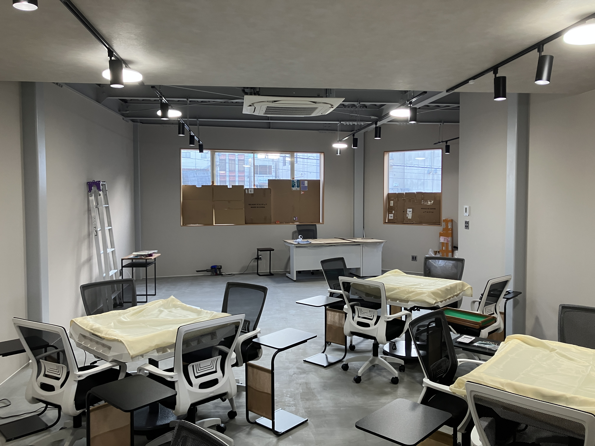
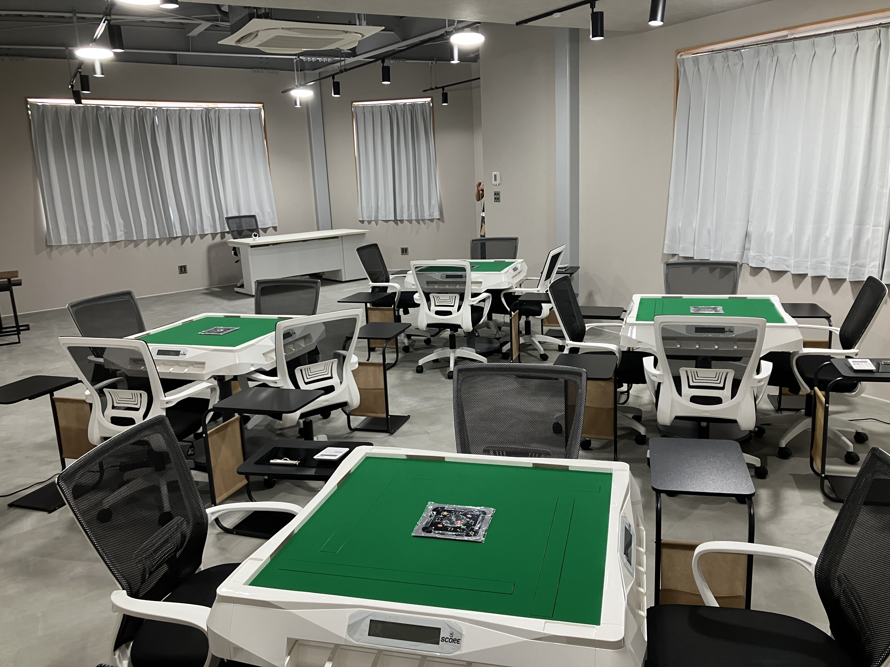
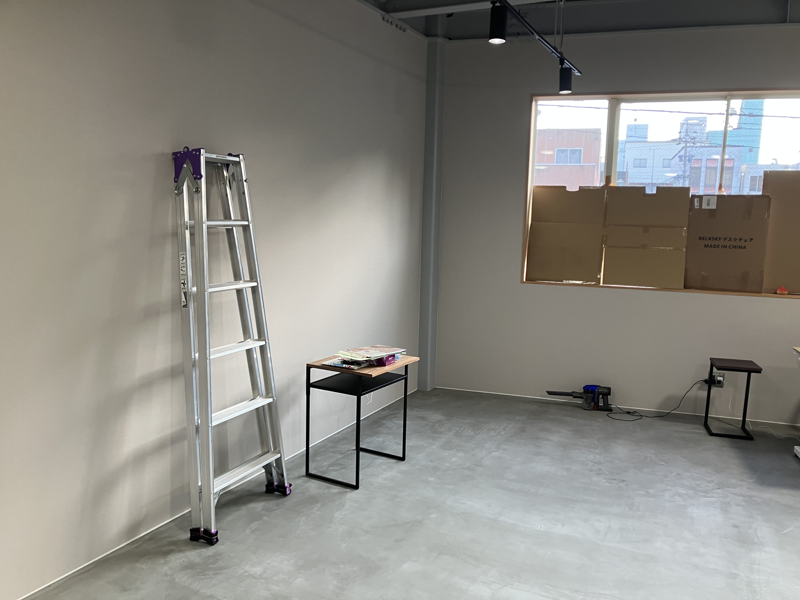
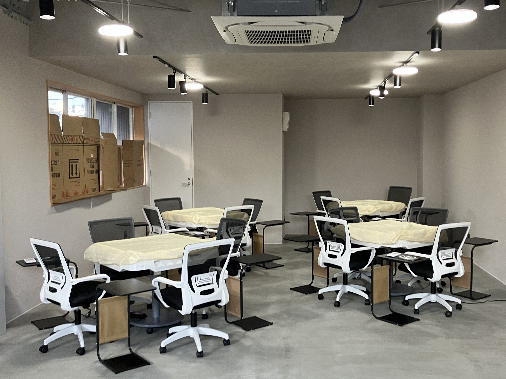

初心者から経験者まで
安心して楽しめる健康麻雀のお店です。
健康まーじゃんCOCORUは、 「賭けない・飲まない・吸わない」を基本とした、 利用料のみで安心して楽しめる健康麻雀店です。
麻雀が初めての方、 久しぶりに楽しみたい方、 健康づくりや交流の場を求める方まで、 幅広くご利用いただけます。
自動雀卓で快適に麻雀を楽しめます。




お金賭けない健康麻雀なので、初めての方でも利用料金のみで安心して楽しめます。
麻雀を通じて、地域の交流の場を提供します。
老若男女問わず、幅広い年齢層の方にご利用いただけます。（18歳以上）
役がまだ分からない方でも、牌をツモって並べ、不要な牌を捨てることができる程度であればご予約いただけます。
実際の対局経験がなくても、麻雀ゲームなどでなんとなくルールを覚えた程度の方も大歓迎です。
一度も麻雀をやったことがない方、または少し触れたことがある程度の方は、まずは土曜日に不定期開催している麻雀教室へのご参加をおすすめしています。
ルールに不安がある方もお気軽にご相談ください。
午前（9:00～12:00）、午後（12:30～15:30）
一般：1,200円（税込）
学生：1,000円（税込）
セット：1時間1卓1,200円（税込）
※セットは少なくともお一人は当店の会員である必要があり、3時間以上のご利用を必須とさせていただいております。
初回の体験は500円（税込）です。
※お一人様1回限り
初回はお電話またはLINEからお問い合わせください。
お問い合わせいただいた時点では、 予約確定ではありません。
健康麻雀は1卓4名様で成立するため、 人数が揃った場合に予約成立となります。
お店から予約完了の連絡を差し上げた時点で、 予約確定となります。
開催できない場合も、 必ずお店からご連絡いたします。
予約成立後であっても、同卓予定のお客様のキャンセルなどにより、やむを得ず対局の組み合わせが成立しない場合は、ご予約をキャンセルさせていただくことがございます。
あらかじめご了承ください。
予約時間（9:00または12:30）の10分前までにご来店ください。
マナーを守って、楽しい時間をお過ごしください。
必ずLINEでご予約ください。
口頭や電話でのご予約は受け付けておりません。
当店は会員制です。
初回ご利用時に入会申込書をお渡ししますので、必要事項をご記入のうえ、次回来店時にご提出ください。
皆様に安心してお過ごしいただけるお店づくりのため、店舗のルールやマナーをお守りいただけない場合は、退会および以後のご利用をお断りする場合がございます。
ご自身で代わりのお客様をお探しいただいた場合は、キャンセル料は発生しません。
キャンセル料が発生した場合は、 次回来店時にお支払いをお願いいたします。
当店では飲食の提供、販売は行っておりません。
お飲み物はご自由にお持ち込みいただけます。
アルコール類の持ち込みは禁止となっております。
午前・午後を続けてご予約いただく場合は、
お昼休憩の時間が短い（30分しかない）ので、
お昼ご飯をご持参ください。
※電子レンジをご利用いただけます。
トイレは個室が1つのみのため、清潔さを保つため男性のお客様も必ず座ってご利用ください。
ゴミ箱はございませんので、ゴミはお持ち帰りください。
麻雀のルールやマナーだけでなく、お店のルールも守り、皆様が気持ちよく楽しめる空間づくりにご協力ください。
ご協力いただけない、またはキャンセルが多いお客様はご利用をお断りする、または退会していただく場合もございます。
営業日や予約状況をご確認いただけます。
カレンダーに表示されている日付が予約可能な日です。
COCORUでの対局ルールをご確認ください。
役が分からなくても、牌をツモって並べて捨てることができる程度の方や、
ゲームなどでなんとなく覚えた方であればご予約いただけます。
まったく初めての方やルールに不安がある方は、まずは麻雀教室へのご参加をおすすめしています。
ご自身のレベルが分からない場合は、お気軽にお問い合わせください。
符の計算、点数計算ができなくてもスタッフがサポートしますので問題ございません。
はい、お一人でもご参加いただけます。
当店で同卓する方を調整いたします。
18歳以上の方にご利用いただけます。
はい、４台すべて自動雀卓で、点数表示機能付きでございます。
自動配牌機能はございません。
はい、午前と午後を両方予約することは可能です。
その場合、お昼休みが30分と短いため、お昼ごはんを持参することをお勧めします。
電子レンジをご利用いただけます。
分かった時点で、お電話またはLINEでご連絡ください。
当店は会員制です。初回ご利用時に入会申込書をお渡ししますので、必要事項をご記入のうえ、次回来店時にご提出をお願いいたします。
終了時刻の5分前にアナウンスをいたします。
その時点で進行中の局を最後とさせていただき、半荘の途中でも終了となります。
ございません。 当店は禁煙ですので、店内での喫煙はご遠慮ください。
お支払いは現金のみとなります。
クレジットカード、電子マネー、QRコード決済など現金以外の支払い方法はご利用いただけません。
専用駐車場はございません。
近隣のコインパーキングをご利用ください。
1時間100円や朝から夕方まで最大300円～500円のコインパーキングがございます。
駐輪場はございません。
近隣の有料駐輪場をご利用ください。
藤枝駅南口にあるオーレ藤枝の駐輪場は、1日100円でご利用いただけます。
〒426-0034
静岡県藤枝市駅前１丁目１０－６－２階
※１階は炉端焼き×おばんざい五鱗GORIN様です。
北側の階段から２階にお上がりください。
最寄り駅はJR藤枝駅（徒歩４分）
駐車場はございません。
お車でお越しの際は、近隣のコインパーキングをご利用ください。
ご予約・お問い合わせは
LINEまたはお電話でお願いいたします。